<!DOCTYPE html>

<html>
  <head>
    <meta charset="utf-8" />
    <meta name="viewport" content="width=device-width, initial-scale=1.0" />
    <title>Genetic Mechanisms &#8212; Comparative Animal Behavior</title>
    
  <link href="../_static/css/theme.css" rel="stylesheet">
  <link href="../_static/css/index.ff1ffe594081f20da1ef19478df9384b.css" rel="stylesheet">

    
  <link rel="stylesheet"
    href="../_static/vendor/fontawesome/5.13.0/css/all.min.css">
  <link rel="preload" as="font" type="font/woff2" crossorigin
    href="../_static/vendor/fontawesome/5.13.0/webfonts/fa-solid-900.woff2">
  <link rel="preload" as="font" type="font/woff2" crossorigin
    href="../_static/vendor/fontawesome/5.13.0/webfonts/fa-brands-400.woff2">

    
      

    
    <link rel="stylesheet" type="text/css" href="../_static/pygments.css" />
    <link rel="stylesheet" type="text/css" href="../_static/sphinx-book-theme.css?digest=c3fdc42140077d1ad13ad2f1588a4309" />
    <link rel="stylesheet" type="text/css" href="../_static/togglebutton.css" />
    <link rel="stylesheet" type="text/css" href="../_static/copybutton.css" />
    <link rel="stylesheet" type="text/css" href="../_static/mystnb.css" />
    <link rel="stylesheet" type="text/css" href="../_static/sphinx-thebe.css" />
    <link rel="stylesheet" type="text/css" href="../_static/panels-main.c949a650a448cc0ae9fd3441c0e17fb0.css" />
    <link rel="stylesheet" type="text/css" href="../_static/panels-variables.06eb56fa6e07937060861dad626602ad.css" />
    
  <link rel="preload" as="script" href="../_static/js/index.be7d3bbb2ef33a8344ce.js">

    <script data-url_root="../" id="documentation_options" src="../_static/documentation_options.js"></script>
    <script src="../_static/jquery.js"></script>
    <script src="../_static/underscore.js"></script>
    <script src="../_static/doctools.js"></script>
    <script src="../_static/clipboard.min.js"></script>
    <script src="../_static/copybutton.js"></script>
    <script>let toggleHintShow = 'Click to show';</script>
    <script>let toggleHintHide = 'Click to hide';</script>
    <script>let toggleOpenOnPrint = 'true';</script>
    <script src="../_static/togglebutton.js"></script>
    <script>var togglebuttonSelector = '.toggle, .admonition.dropdown, .tag_hide_input div.cell_input, .tag_hide-input div.cell_input, .tag_hide_output div.cell_output, .tag_hide-output div.cell_output, .tag_hide_cell.cell, .tag_hide-cell.cell';</script>
    <script src="../_static/sphinx-book-theme.d59cb220de22ca1c485ebbdc042f0030.js"></script>
    <script>const THEBE_JS_URL = "https://unpkg.com/thebe@0.8.2/lib/index.js"
const thebe_selector = ".thebe,.cell"
const thebe_selector_input = "pre"
const thebe_selector_output = ".output, .cell_output"
</script>
    <script async="async" src="../_static/sphinx-thebe.js"></script>
    <link rel="index" title="Index" href="../genindex.html" />
    <link rel="search" title="Search" href="../search.html" />
    <link rel="next" title="Development" href="development.html" />
    <link rel="prev" title="Endogenous Rhythms" href="endogenous-rhythms.html" />
    <meta name="viewport" content="width=device-width, initial-scale=1" />
    <meta name="docsearch:language" content="None">
    

    <!-- Google Analytics -->
    
  </head>
  <body data-spy="scroll" data-target="#bd-toc-nav" data-offset="80">
    
    <div class="container-fluid" id="banner"></div>

    

    <div class="container-xl">
      <div class="row">
          
<div class="col-12 col-md-3 bd-sidebar site-navigation show" id="site-navigation">
    
        <div class="navbar-brand-box">
    <a class="navbar-brand text-wrap" href="../index.html">
      
        <!-- `logo` is deprecated in Sphinx 4.0, so remove this when we stop supporting 3 -->
        
      
      
      
      
      
      <h1 class="site-logo" id="site-title">Comparative Animal Behavior</h1>
      
    </a>
</div><form class="bd-search d-flex align-items-center" action="../search.html" method="get">
  <i class="icon fas fa-search"></i>
  <input type="search" class="form-control" name="q" id="search-input" placeholder="Search this book..." aria-label="Search this book..." autocomplete="off" >
</form><nav class="bd-links" id="bd-docs-nav" aria-label="Main">
    <div class="bd-toc-item active">
        <ul class="nav bd-sidenav">
 <li class="toctree-l1">
  <a class="reference internal" href="../welcome.html">
   Welcome
  </a>
 </li>
</ul>
<p aria-level="2" class="caption" role="heading">
 <span class="caption-text">
  General
 </span>
</p>
<ul class="nav bd-sidenav">
 <li class="toctree-l1">
  <a class="reference internal" href="../syllabus.html">
   Syllabus
  </a>
 </li>
 <li class="toctree-l1">
  <a class="reference internal" href="../schedule.html">
   Schedule
  </a>
 </li>
 <li class="toctree-l1 has-children">
  <a class="reference internal" href="../assessment-sum/cumulative-exam.html">
   Cumulative Exam
  </a>
  <input class="toctree-checkbox" id="toctree-checkbox-1" name="toctree-checkbox-1" type="checkbox"/>
  <label for="toctree-checkbox-1">
   <i class="fas fa-chevron-down">
   </i>
  </label>
  <ul>
   <li class="toctree-l2">
    <a class="reference internal" href="../assessment-sum/assessment-example.html">
     Example
    </a>
   </li>
  </ul>
 </li>
 <li class="toctree-l1">
  <a class="reference internal" href="../assessment-sum/capstone.html">
   Capstone
  </a>
 </li>
 <li class="toctree-l1">
  <a class="reference internal" href="../genindex.html">
   Terms, Topics, Concepts
  </a>
 </li>
 <li class="toctree-l1">
  <a class="reference internal" href="../ethical-considerations.html">
   Ethical Considerations for Animal Use
  </a>
 </li>
</ul>
<p aria-level="2" class="caption" role="heading">
 <span class="caption-text">
  Describing Behavior
 </span>
</p>
<ul class="nav bd-sidenav">
 <li class="toctree-l1">
  <a class="reference internal" href="../observation-and-analysis/components.html">
   Components
  </a>
 </li>
 <li class="toctree-l1">
  <a class="reference internal" href="../observation-and-analysis/observation.html">
   Observation
  </a>
 </li>
 <li class="toctree-l1">
  <a class="reference internal" href="../observation-and-analysis/analysis.html">
   Analysis
  </a>
 </li>
</ul>
<p aria-level="2" class="caption" role="heading">
 <span class="caption-text">
  Levels of Analysis
 </span>
</p>
<ul class="current nav bd-sidenav">
 <li class="toctree-l1">
  <a class="reference internal" href="phylogeny.html">
   Phylogeny
  </a>
 </li>
 <li class="toctree-l1">
  <a class="reference internal" href="evolution.html">
   Evolution
  </a>
 </li>
 <li class="toctree-l1 current active has-children">
  <a class="reference internal" href="neural-hormonal-genetic.html">
   Neural, Hormonal, and Genetic
  </a>
  <input checked="" class="toctree-checkbox" id="toctree-checkbox-2" name="toctree-checkbox-2" type="checkbox"/>
  <label for="toctree-checkbox-2">
   <i class="fas fa-chevron-down">
   </i>
  </label>
  <ul class="current">
   <li class="toctree-l2">
    <a class="reference internal" href="neural.html">
     Neural Mechanisms
    </a>
   </li>
   <li class="toctree-l2">
    <a class="reference internal" href="hormonal.html">
     Hormonal Mechanisms
    </a>
   </li>
   <li class="toctree-l2">
    <a class="reference internal" href="endogenous-rhythms.html">
     Endogenous Rhythms
    </a>
   </li>
   <li class="toctree-l2 current active">
    <a class="current reference internal" href="#">
     Genetic Mechanisms
    </a>
   </li>
  </ul>
 </li>
 <li class="toctree-l1">
  <a class="reference internal" href="development.html">
   Development
  </a>
 </li>
</ul>
<p aria-level="2" class="caption" role="heading">
 <span class="caption-text">
  Understanding Behavior
 </span>
</p>
<ul class="nav bd-sidenav">
 <li class="toctree-l1">
  <a class="reference internal" href="../understanding-behavior/navigation.html">
   Navigation
  </a>
 </li>
 <li class="toctree-l1">
  <a class="reference internal" href="../understanding-behavior/escape.html">
   Escape
  </a>
 </li>
 <li class="toctree-l1 has-children">
  <a class="reference internal" href="../understanding-behavior/social-spectrum.html">
   Social Spectrum
  </a>
  <input class="toctree-checkbox" id="toctree-checkbox-3" name="toctree-checkbox-3" type="checkbox"/>
  <label for="toctree-checkbox-3">
   <i class="fas fa-chevron-down">
   </i>
  </label>
  <ul>
   <li class="toctree-l2">
    <a class="reference internal" href="../understanding-behavior/cooperation.html">
     Grouping and Cooperation
    </a>
   </li>
   <li class="toctree-l2">
    <a class="reference internal" href="../understanding-behavior/eusociality.html">
     Eusociality
    </a>
   </li>
  </ul>
 </li>
 <li class="toctree-l1 has-children">
  <a class="reference internal" href="../understanding-behavior/communication.html">
   Communication
  </a>
  <input class="toctree-checkbox" id="toctree-checkbox-4" name="toctree-checkbox-4" type="checkbox"/>
  <label for="toctree-checkbox-4">
   <i class="fas fa-chevron-down">
   </i>
  </label>
  <ul>
   <li class="toctree-l2">
    <a class="reference internal" href="../understanding-behavior/communication-proximate.html">
     Communication: Proximate
    </a>
   </li>
   <li class="toctree-l2">
    <a class="reference internal" href="../understanding-behavior/communication-ultimate.html">
     Overlapping Interests
    </a>
   </li>
  </ul>
 </li>
 <li class="toctree-l1 has-children">
  <a class="reference internal" href="../understanding-behavior/family-life.html">
   Family Life
  </a>
  <input class="toctree-checkbox" id="toctree-checkbox-5" name="toctree-checkbox-5" type="checkbox"/>
  <label for="toctree-checkbox-5">
   <i class="fas fa-chevron-down">
   </i>
  </label>
  <ul>
   <li class="toctree-l2">
    <a class="reference internal" href="../understanding-behavior/sexual-selection.html">
     Sexual Selection
    </a>
   </li>
   <li class="toctree-l2">
    <a class="reference internal" href="../understanding-behavior/mating-systems.html">
     Mating Systems
    </a>
   </li>
   <li class="toctree-l2">
    <a class="reference internal" href="../understanding-behavior/parental-care.html">
     Parental Care
    </a>
   </li>
  </ul>
 </li>
</ul>

    </div>
</nav> <!-- To handle the deprecated key -->

<div class="navbar_extra_footer">
  Powered by <a href="https://jupyterbook.org">Jupyter Book</a>
</div>

</div>


          


          
<main class="col py-md-3 pl-md-4 bd-content overflow-auto" role="main">
    
    <div class="topbar container-xl fixed-top">
    <div class="topbar-contents row">
        <div class="col-12 col-md-3 bd-topbar-whitespace site-navigation show"></div>
        <div class="col pl-md-4 topbar-main">
            
            <button id="navbar-toggler" class="navbar-toggler ml-0" type="button" data-toggle="collapse"
                data-toggle="tooltip" data-placement="bottom" data-target=".site-navigation" aria-controls="navbar-menu"
                aria-expanded="true" aria-label="Toggle navigation" aria-controls="site-navigation"
                title="Toggle navigation" data-toggle="tooltip" data-placement="left">
                <i class="fas fa-bars"></i>
                <i class="fas fa-arrow-left"></i>
                <i class="fas fa-arrow-up"></i>
            </button>
            
            
<div class="dropdown-buttons-trigger">
    <button id="dropdown-buttons-trigger" class="btn btn-secondary topbarbtn" aria-label="Download this page"><i
            class="fas fa-download"></i></button>

    <div class="dropdown-buttons">
        <!-- ipynb file if we had a myst markdown file -->
        
        <!-- Download raw file -->
        <a class="dropdown-buttons" href="../_sources/levels-of-analysis/genetic.md"><button type="button"
                class="btn btn-secondary topbarbtn" title="Download source file" data-toggle="tooltip"
                data-placement="left">.md</button></a>
        <!-- Download PDF via print -->
        <button type="button" id="download-print" class="btn btn-secondary topbarbtn" title="Print to PDF"
                onclick="printPdf(this)" data-toggle="tooltip" data-placement="left">.pdf</button>
    </div>
</div>

            <!-- Source interaction buttons -->

<div class="dropdown-buttons-trigger">
    <button id="dropdown-buttons-trigger" class="btn btn-secondary topbarbtn"
        aria-label="Connect with source repository"><i class="fab fa-github"></i></button>
    <div class="dropdown-buttons sourcebuttons">
        <a class="repository-button"
            href="https://github.com/neurologic/Comparative-Animal-Behavior"><button type="button" class="btn btn-secondary topbarbtn"
                data-toggle="tooltip" data-placement="left" title="Source repository"><i
                    class="fab fa-github"></i>repository</button></a>
        <a class="issues-button"
            href="https://github.com/neurologic/Comparative-Animal-Behavior/issues/new?title=Issue%20on%20page%20%2Flevels-of-analysis/genetic.html&body=Your%20issue%20content%20here."><button
                type="button" class="btn btn-secondary topbarbtn" data-toggle="tooltip" data-placement="left"
                title="Open an issue"><i class="fas fa-lightbulb"></i>open issue</button></a>
        
    </div>
</div>

            <!-- Full screen (wrap in <a> to have style consistency -->

<a class="full-screen-button"><button type="button" class="btn btn-secondary topbarbtn" data-toggle="tooltip"
        data-placement="bottom" onclick="toggleFullScreen()" aria-label="Fullscreen mode"
        title="Fullscreen mode"><i
            class="fas fa-expand"></i></button></a>

            <!-- Launch buttons -->

        </div>

        <!-- Table of contents -->
        <div class="d-none d-md-block col-md-2 bd-toc show noprint">
            
            <div class="tocsection onthispage pt-5 pb-3">
                <i class="fas fa-list"></i> Contents
            </div>
            <nav id="bd-toc-nav" aria-label="Page">
                <ul class="visible nav section-nav flex-column">
 <li class="toc-h2 nav-item toc-entry">
  <a class="reference internal nav-link" href="#genetics-primer">
   Genetics Primer
  </a>
  <ul class="nav section-nav flex-column">
   <li class="toc-h3 nav-item toc-entry">
    <a class="reference internal nav-link" href="#proteins">
     Proteins
    </a>
   </li>
   <li class="toc-h3 nav-item toc-entry">
    <a class="reference internal nav-link" href="#protein-composition">
     Protein Composition
    </a>
   </li>
   <li class="toc-h3 nav-item toc-entry">
    <a class="reference internal nav-link" href="#central-dogma">
     Central Dogma
    </a>
   </li>
  </ul>
 </li>
 <li class="toc-h2 nav-item toc-entry">
  <a class="reference internal nav-link" href="#sexual-reproduction-mixing-things-up">
   Sexual Reproduction: mixing things up
  </a>
  <ul class="nav section-nav flex-column">
   <li class="toc-h3 nav-item toc-entry">
    <a class="reference internal nav-link" href="#gene-phenotype-trends">
     Gene-Phenotype Trends
    </a>
   </li>
  </ul>
 </li>
 <li class="toc-h2 nav-item toc-entry">
  <a class="reference internal nav-link" href="#experimental-approaches">
   Experimental Approaches
  </a>
  <ul class="nav section-nav flex-column">
   <li class="toc-h3 nav-item toc-entry">
    <a class="reference internal nav-link" href="#genes">
     Genes?
    </a>
    <ul class="nav section-nav flex-column">
     <li class="toc-h4 nav-item toc-entry">
      <a class="reference internal nav-link" href="#cross-fostering">
       Cross Fostering
      </a>
     </li>
    </ul>
   </li>
   <li class="toc-h3 nav-item toc-entry">
    <a class="reference internal nav-link" href="#what-genes">
     What Genes?
    </a>
    <ul class="nav section-nav flex-column">
     <li class="toc-h4 nav-item toc-entry">
      <a class="reference internal nav-link" href="#genetic-cross">
       Genetic Cross
      </a>
     </li>
     <li class="toc-h4 nav-item toc-entry">
      <a class="reference internal nav-link" href="#forward-genetics">
       Forward Genetics
      </a>
     </li>
     <li class="toc-h4 nav-item toc-entry">
      <a class="reference internal nav-link" href="#reverse-genetics">
       Reverse Genetics
      </a>
     </li>
    </ul>
   </li>
  </ul>
 </li>
 <li class="toc-h2 nav-item toc-entry">
  <a class="reference internal nav-link" href="#case-study-genetics-of-monogamy">
   Case Study: Genetics of Monogamy
  </a>
 </li>
 <li class="toc-h2 nav-item toc-entry">
  <a class="reference internal nav-link" href="#additional-resources">
   Additional Resources
  </a>
 </li>
</ul>

            </nav>
        </div>
    </div>
</div>
    <div id="main-content" class="row">
        <div class="col-12 col-md-9 pl-md-3 pr-md-0">
            <!-- Table of contents that is only displayed when printing the page -->
            <div id="jb-print-docs-body" class="onlyprint">
                <h1>Genetic Mechanisms</h1>
                <!-- Table of contents -->
                <div id="print-main-content">
                    <div id="jb-print-toc">
                        
                        <div>
                            <h2> Contents </h2>
                        </div>
                        <nav aria-label="Page">
                            <ul class="visible nav section-nav flex-column">
 <li class="toc-h2 nav-item toc-entry">
  <a class="reference internal nav-link" href="#genetics-primer">
   Genetics Primer
  </a>
  <ul class="nav section-nav flex-column">
   <li class="toc-h3 nav-item toc-entry">
    <a class="reference internal nav-link" href="#proteins">
     Proteins
    </a>
   </li>
   <li class="toc-h3 nav-item toc-entry">
    <a class="reference internal nav-link" href="#protein-composition">
     Protein Composition
    </a>
   </li>
   <li class="toc-h3 nav-item toc-entry">
    <a class="reference internal nav-link" href="#central-dogma">
     Central Dogma
    </a>
   </li>
  </ul>
 </li>
 <li class="toc-h2 nav-item toc-entry">
  <a class="reference internal nav-link" href="#sexual-reproduction-mixing-things-up">
   Sexual Reproduction: mixing things up
  </a>
  <ul class="nav section-nav flex-column">
   <li class="toc-h3 nav-item toc-entry">
    <a class="reference internal nav-link" href="#gene-phenotype-trends">
     Gene-Phenotype Trends
    </a>
   </li>
  </ul>
 </li>
 <li class="toc-h2 nav-item toc-entry">
  <a class="reference internal nav-link" href="#experimental-approaches">
   Experimental Approaches
  </a>
  <ul class="nav section-nav flex-column">
   <li class="toc-h3 nav-item toc-entry">
    <a class="reference internal nav-link" href="#genes">
     Genes?
    </a>
    <ul class="nav section-nav flex-column">
     <li class="toc-h4 nav-item toc-entry">
      <a class="reference internal nav-link" href="#cross-fostering">
       Cross Fostering
      </a>
     </li>
    </ul>
   </li>
   <li class="toc-h3 nav-item toc-entry">
    <a class="reference internal nav-link" href="#what-genes">
     What Genes?
    </a>
    <ul class="nav section-nav flex-column">
     <li class="toc-h4 nav-item toc-entry">
      <a class="reference internal nav-link" href="#genetic-cross">
       Genetic Cross
      </a>
     </li>
     <li class="toc-h4 nav-item toc-entry">
      <a class="reference internal nav-link" href="#forward-genetics">
       Forward Genetics
      </a>
     </li>
     <li class="toc-h4 nav-item toc-entry">
      <a class="reference internal nav-link" href="#reverse-genetics">
       Reverse Genetics
      </a>
     </li>
    </ul>
   </li>
  </ul>
 </li>
 <li class="toc-h2 nav-item toc-entry">
  <a class="reference internal nav-link" href="#case-study-genetics-of-monogamy">
   Case Study: Genetics of Monogamy
  </a>
 </li>
 <li class="toc-h2 nav-item toc-entry">
  <a class="reference internal nav-link" href="#additional-resources">
   Additional Resources
  </a>
 </li>
</ul>

                        </nav>
                    </div>
                </div>
            </div>
            
              <div>
                
  <div class="tex2jax_ignore mathjax_ignore section" id="genetic-mechanisms">
<h1>Genetic Mechanisms<a class="headerlink" href="#genetic-mechanisms" title="Permalink to this headline">¶</a></h1>
<hr>
<blockquote>
<div><p>2368 words | 95 min read</p>
</div></blockquote>
<hr>
<div class="section" id="genetics-primer">
<h2>Genetics Primer<a class="headerlink" href="#genetics-primer" title="Permalink to this headline">¶</a></h2>
<div class="section" id="proteins">
<h3>Proteins<a class="headerlink" href="#proteins" title="Permalink to this headline">¶</a></h3>
<p>The proteins comprising an animal’s body are essential material to all behavioral phenotypes. Proteins provide the physical form of an animal, which grants unique affordances to different animals. Proteins also dictate the functional properties of an animal’s nervous system, which orchestrates the actions of behavior directly.</p>
<div class="figure align-default" id="gif">
<a class="reference internal image-reference" href="../_images/large_subunit.gif">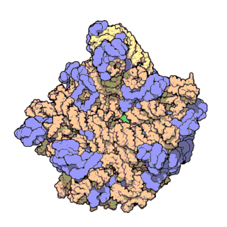</a>
<p class="caption"><span class="caption-number">Fig. 31 </span><span class="caption-text">An example protein animated in 3-D (a large ribosomal subunit). Ribosomes “build” proteins. Gif from <a class="reference external" href="https://pdb101.rcsb.org/learn/videos/ribosomal-subunits">PDB-101</a></span><a class="headerlink" href="#gif" title="Permalink to this image">¶</a></p>
</div>
<div class="figure align-default" id="ach-receptor">
<a class="reference internal image-reference" href="../_images/71-AcetylcholineReceptor-2bg9-composite.png">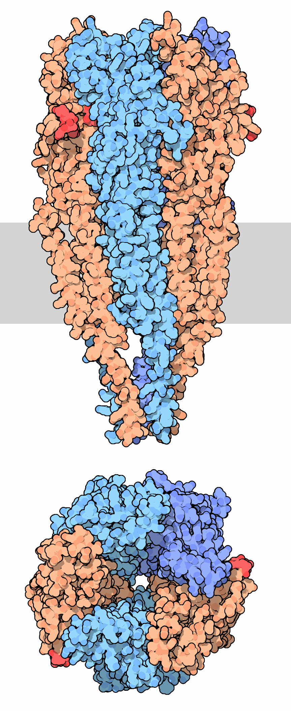</a>
<p class="caption"><span class="caption-number">Fig. 32 </span><span class="caption-text">An example protein - the acetylcholine receptor. This protein is found in muscle cells and is necessary for muscle contraction in response to synaptic input from motor neurons. When acetylcholine binds to the receptor, the receptor lets specific ions through the membrane. Top: side view with cell membrane in gray. Bottom: top view with acetylcholine binding sites in red. Image from <a class="reference external" href="https://pdb101.rcsb.org/motm/71">PDB-101</a></span><a class="headerlink" href="#ach-receptor" title="Permalink to this image">¶</a></p>
</div>
<p><em><strong>Q: Think back to the “<a class="reference external" href="../levels-of-analysis/neural/#table1">neural mechanisms</a>” work you have done. What ions do you think the acetylcholine receptor lets through the membrane when bound by acetylcholine? Why?</strong></em></p>
</div>
<div class="section" id="protein-composition">
<h3>Protein Composition<a class="headerlink" href="#protein-composition" title="Permalink to this headline">¶</a></h3>
<div class="figure align-default" id="amino-acids">
<a class="reference internal image-reference" href="../_images/AminoAcids.png">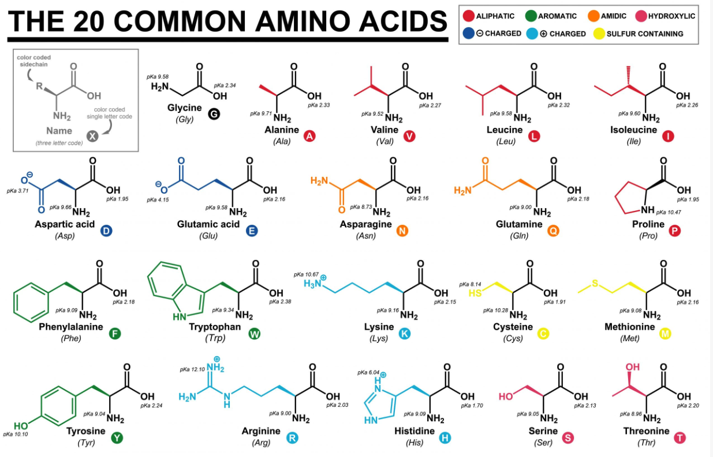</a>
<p class="caption"><span class="caption-number">Fig. 33 </span><span class="caption-text">Amino Acid units that comprise protein.<br />
Image from <a class="reference external" href="https://www.reagent.co.uk/what-are-amino-acids/">ReAgent</a></span><a class="headerlink" href="#amino-acids" title="Permalink to this image">¶</a></p>
</div>
<p><em><strong>Q: For the following protein sequence: Methionine-Glutamic acid-Proline-Tryptophan, write out the “single letter code”.</strong></em></p>
<div class="figure align-default" id="nucleic-acids">
<a class="reference internal image-reference" href="../_images/Nucleic-Acids.png">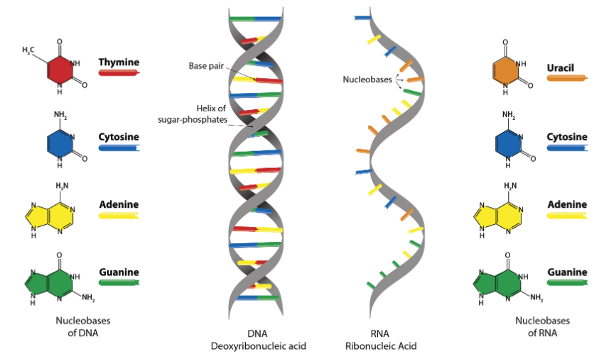</a>
<p class="caption"><span class="caption-number">Fig. 34 </span><span class="caption-text">Nucleic Acid units that comprise DNA and RNA.<br />
Image from <a class="reference external" href="https://www.technologynetworks.com/genomics/lists/what-are-the-key-differences-between-dna-and-rna-296719">Technology Networks</a></span><a class="headerlink" href="#nucleic-acids" title="Permalink to this image">¶</a></p>
</div>
</div>
<div class="section" id="central-dogma">
<h3>Central Dogma<a class="headerlink" href="#central-dogma" title="Permalink to this headline">¶</a></h3>
<p>Examine the following deoxyribonucleic acid (DNA), ribonucleic acid (RNA), and amino acid (AA) (single letter code) sequences from the <a class="reference external" href="https://www.ncbi.nlm.nih.gov/nuccore/193788647">NCBI GenBank</a>. Each letter represents an individual molecule.</p>
<details class="sphinx-bs dropdown card mb-3">
<summary class="summary-title card-header">
The DNA <em>gene</em> for the acetylcholine receptor alpha-1 subunit (length 1449 characters)<div class="summary-down docutils">
<svg version="1.1" width="24" height="24" class="octicon octicon-chevron-down" viewBox="0 0 24 24" aria-hidden="true"><path fill-rule="evenodd" d="M5.22 8.72a.75.75 0 000 1.06l6.25 6.25a.75.75 0 001.06 0l6.25-6.25a.75.75 0 00-1.06-1.06L12 14.44 6.28 8.72a.75.75 0 00-1.06 0z"></path></svg></div>
<div class="summary-up docutils">
<svg version="1.1" width="24" height="24" class="octicon octicon-chevron-up" viewBox="0 0 24 24" aria-hidden="true"><path fill-rule="evenodd" d="M18.78 15.28a.75.75 0 000-1.06l-6.25-6.25a.75.75 0 00-1.06 0l-6.25 6.25a.75.75 0 101.06 1.06L12 9.56l5.72 5.72a.75.75 0 001.06 0z"></path></svg></div>
</summary><div class="summary-content card-body docutils">
<p class="card-text">ATGGAGCCCTGGCCTCTCCTCCTGCTCTTTAGCCTTTGCTCAGCTGGCCTCGTCCTGGGCTCCGAACATGAGACCCGTCTGGTGGCAAAGCTATTTAAAGACTACAGCAGCGTGGTGCGGCCAGTGGAAGACCACCGCCAGGTCGTGGAGGTCACCGTGGGCCTGCAGCTGATACAGCTCATCAATGTGGATGAAGTAAATCAGATCGTGACAACCAATGTGCGTCTGAAACAGGGTGACATGGTAGATCTGCCACGCCCCAGCTGCGTGACTTTGGGAGTTCCTTTGTTTTCTCATCTGCAGAATGAGCAATGGGTGGATTACAACCTAAAATGGAATCCAGATGACTATGGCGGTGTGAAAAAAATTCACATTCCTTCAGAAAAGATCTGGCGCCCAGACCTTGTTCTCTATAACAATGCAGATGGTGACTTTGCTATTGTCAAGTTCACCAAAGTGCTCCTGCAGTACACTGGCCACATCACGTGGACACCTCCAGCCATCTTTAAAAGCTACTGTGAGATCATCGTCACCCACTTTCCCTTTGATGAACAGAACTGCAGCATGAAGCTGGGCACCTGGACCTACGACGGCTCTGTCGTGGCCATCAACCCGGAAAGCGACCAGCCAGACCTGAGCAACTTCATGGAGAGCGGGGAGTGGGTGATCAAGGAGTCCCGGGGCTGGAAGCACTCCGTGACCTATTCCTGCTGCCCCGACACCCCCTACCTGGACATCACCTACCACTTCGTCATGCAGCGCCTGCCCCTCTACTTCATCGTCAACGTCATCATCCCCTGCCTGCTCTTCTCCTTCTTAACTGGCCTGGTATTCTACCTGCCCACAGACTCAGGGGAGAAGATGACTCTGAGCATCTCTGTCTTACTGTCTTTGACTGTGTTCCTTCTGGTCATCGTGGAGCTGATCCCCTCCACGTCCAGTGCTGTGCCCTTGATTGGAAAATACATGCTGTTCACCATGGTGTTCGTCATTGCCTCCATCATCATCACTGTCATCGTCATCAACACACACCACCGCTCACCCAGCACCCATGTCATGCCCAACTGGGTGCGGAAGGTTTTTATCGACACTATCCCAAATATCATGTTTTTCTCCACAATGAAAAGACCATCCAGAGAAAAGCAAGACAAAAAGATTTTTACAGAAGACATTGATATCTCTGACATTTCTGGAAAGCCAGGGCCTCCACCCATGGGCTTCCACTCTCCCCTGATCAAACACCCCGAGGTGAAAAGTGCCATCGAGGGCATCAAGTACATCGCAGAGACCATGAAGTCAGACCAGGAGTCTAACAATGCGGCGGCAGAGTGGAAGTACGTTGCAATGGTGATGGACCACATACTCCTCGGAGTCTTCATGCTTGTTTGCATCATCGGAACCCTAGCCGTGTTTGCAGGTCGACTCATTGAATTAAATCAGCAAGGATGA</p>
</div>
</details><details class="sphinx-bs dropdown card mb-3">
<summary class="summary-title card-header">
The <em>transcribed</em> mRNA for the acetylcholine receptor alpha-1 subunit (length 1449 characters)<div class="summary-down docutils">
<svg version="1.1" width="24" height="24" class="octicon octicon-chevron-down" viewBox="0 0 24 24" aria-hidden="true"><path fill-rule="evenodd" d="M5.22 8.72a.75.75 0 000 1.06l6.25 6.25a.75.75 0 001.06 0l6.25-6.25a.75.75 0 00-1.06-1.06L12 14.44 6.28 8.72a.75.75 0 00-1.06 0z"></path></svg></div>
<div class="summary-up docutils">
<svg version="1.1" width="24" height="24" class="octicon octicon-chevron-up" viewBox="0 0 24 24" aria-hidden="true"><path fill-rule="evenodd" d="M18.78 15.28a.75.75 0 000-1.06l-6.25-6.25a.75.75 0 00-1.06 0l-6.25 6.25a.75.75 0 101.06 1.06L12 9.56l5.72 5.72a.75.75 0 001.06 0z"></path></svg></div>
</summary><div class="summary-content card-body docutils">
<p class="card-text">AUGGAGCCCUGGCCUCUCCUCCUGCUCUUUAGCCUUUGCUCAGCUGGCCUCGUCCUGGGCUCCGAACAUGAGACCCGUCUGGUGGCAAAGCUAUUUAAAGACUACAGCAGCGUGGUGCGGCCAGUGGAAGACCACCGCCAGGUCGUGGAGGUCACCGUGGGCCUGCAGCUGAUACAGCUCAUCAAUGUGGAUGAAGUAAAUCAGAUCGUGACAACCAAUGUGCGUCUGAAACAGGGUGACAUGGUAGAUCUGCCACGCCCCAGCUGCGUGACUUUGGGAGUUCCUUUGUUUUCUCAUCUGCAGAAUGAGCAAUGGGUGGAUUACAACCUAAAAUGGAAUCCAGAUGACUAUGGCGGUGUGAAAAAAAUUCACAUUCCUUCAGAAAAGAUCUGGCGCCCAGACCUUGUUCUCUAUAACAAUGCAGAUGGUGACUUUGCUAUUGUCAAGUUCACCAAAGUGCUCCUGCAGUACACUGGCCACAUCACGUGGACACCUCCAGCCAUCUUUAAAAGCUACUGUGAGAUCAUCGUCACCCACUUUCCCUUUGAUGAACAGAACUGCAGCAUGAAGCUGGGCACCUGGACCUACGACGGCUCUGUCGUGGCCAUCAACCCGGAAAGCGACCAGCCAGACCUGAGCAACUUCAUGGAGAGCGGGGAGUGGGUGAUCAAGGAGUCCCGGGGCUGGAAGCACUCCGUGACCUAUUCCUGCUGCCCCGACACCCCCUACCUGGACAUCACCUACCACUUCGUCAUGCAGCGCCUGCCCCUCUACUUCAUCGUCAACGUCAUCAUCCCCUGCCUGCUCUUCUCCUUCUUAACUGGCCUGGUAUUCUACCUGCCCACAGACUCAGGGGAGAAGAUGACUCUGAGCAUCUCUGUCUUACUGUCUUUGACUGUGUUCCUUCUGGUCAUCGUGGAGCUGAUCCCCUCCACGUCCAGUGCUGUGCCCUUGAUUGGAAAAUACAUGCUGUUCACCAUGGUGUUCGUCAUUGCCUCCAUCAUCAUCACUGUCAUCGUCAUCAACACACACCACCGCUCACCCAGCACCCAUGUCAUGCCCAACUGGGUGCGGAAGGUUUUUAUCGACACUAUCCCAAAUAUCAUGUUUUUCUCCACAAUGAAAAGACCAUCCAGAGAAAAGCAAGACAAAAAGAUUUUUACAGAAGACAUUGAUAUCUCUGACAUUUCUGGAAAGCCAGGGCCUCCACCCAUGGGCUUCCACUCUCCCCUGAUCAAACACCCCGAGGUGAAAAGUGCCAUCGAGGGCAUCAAGUACAUCGCAGAGACCAUGAAGUCAGACCAGGAGUCUAACAAUGCGGCGGCAGAGUGGAAGUACGUUGCAAUGGUGAUGGACCACAUACUCCUCGGAGUCUUCAUGCUUGUUUGCAUCAUCGGAACCCUAGCCGUGUUUGCAGGUCGACUCAUUGAAUUAAAUCAGCAAGGAUGA</p>
</div>
</details><details class="sphinx-bs dropdown card mb-3">
<summary class="summary-title card-header">
The <em>translated</em> protein for the acetylcholine receptor alpha-1 subunit (length 483 characters)<div class="summary-down docutils">
<svg version="1.1" width="24" height="24" class="octicon octicon-chevron-down" viewBox="0 0 24 24" aria-hidden="true"><path fill-rule="evenodd" d="M5.22 8.72a.75.75 0 000 1.06l6.25 6.25a.75.75 0 001.06 0l6.25-6.25a.75.75 0 00-1.06-1.06L12 14.44 6.28 8.72a.75.75 0 00-1.06 0z"></path></svg></div>
<div class="summary-up docutils">
<svg version="1.1" width="24" height="24" class="octicon octicon-chevron-up" viewBox="0 0 24 24" aria-hidden="true"><path fill-rule="evenodd" d="M18.78 15.28a.75.75 0 000-1.06l-6.25-6.25a.75.75 0 00-1.06 0l-6.25 6.25a.75.75 0 101.06 1.06L12 9.56l5.72 5.72a.75.75 0 001.06 0z"></path></svg></div>
</summary><div class="summary-content card-body docutils">
<p class="card-text">MEPWPLLLLFSLCSAGLVLGSEHETRLVAKLFKDYSSVVRPVEDHRQVVEVTVGLQLIQLINVDEVNQIVTTNVRLKQGDMVDLPRPSCVTLGVPLFSHLQNEQWVDYNLKWNPDDYGGVKKIHIPSEKIWRPDLVLYNNADGDFAIVKFTKVLLQYTGHITWTPPAIFKSYCEIIVTHFPFDEQNCSMKLGTWTYDGSVVAINPESDQPDLSNFMESGEWVIKESRGWKHSVTYSCCPDTPYLDITYHFVMQRLPLYFIVNVIIPCLLFSFLTGLVFYLPTDSGEKMTLSISVLLSLTVFLLVIVELIPSTSSAVPLIGKYMLFTMVFVIASIIITVIVINTHHRSPSTHVMPNWVRKVFIDTIPNIMFFSTMKRPSREKQDKKIFTEDIDISDISGKPGPPPMGFHSPLIKHPEVKSAIEGIKYIAETMKSDQESNNAAAEWKYVAMVMDHILLGVFMLVCIIGTLAVFAGRLIELNQQG</p>
</div>
</details><p><em><strong>Q: How many nucleic acid molecules comprise the gene for the acetylcholine receptor alpha-1 subunit?</strong></em></p>
<p><em><strong>Q: How many nucleic acid molecules molecules comprise the mRNA for the acetylcholine receptor alpha-1 subunit?</strong></em></p>
<p><em><strong>Q: How does the mRNA sequence relate to the DNA sequence?</strong></em></p>
<p><em><strong>Q: How many amino acid molecules comprise the protein for the acetylcholine receptor alpha-1 subunit?</strong></em></p>
<p>Ribosomes in the cell cytoplasm read out mRNA and, based on mRNA sequence, construct a string of amino acid chains that make up the synthesized protein. Therefore, genes ultimately “code for” protein structure.</p>
<p><em><strong>Q: How many nucleic acids in a gene are used to determine each AA molecule?</strong></em></p>
<p><em><strong>Q: What is the genetic “code” for Methionine?</strong></em></p>
<dl class="glossary simple">
<dt id="term-gene">gene<a class="headerlink" href="#term-gene" title="Permalink to this term">¶</a></dt><dd><p>a unit of DNA that instructs how to make a specific protein or set of proteins.</p>
</dd>
<dt id="term-genome">genome <a class="headerlink" href="#term-genome" title="Permalink to this term">¶</a></dt><dd><p>the entire DNA sequence (all genetic material) of an animal</p>
</dd>
</dl>
</div>
</div>
<div class="section" id="sexual-reproduction-mixing-things-up">
<h2>Sexual Reproduction: mixing things up<a class="headerlink" href="#sexual-reproduction-mixing-things-up" title="Permalink to this headline">¶</a></h2>
<p>In sexual reproduction, gametes are produced from the genome of a parent. Genes on separate chromosomes <em>assort independently</em> because of the random orientation of homologous chromosome pairs during meiosis.</p>
<div class="figure align-default" id="making-gametes-khanacademy">
<a class="reference internal image-reference" href="../_images/Making-Gametes-KhanAcademy.png">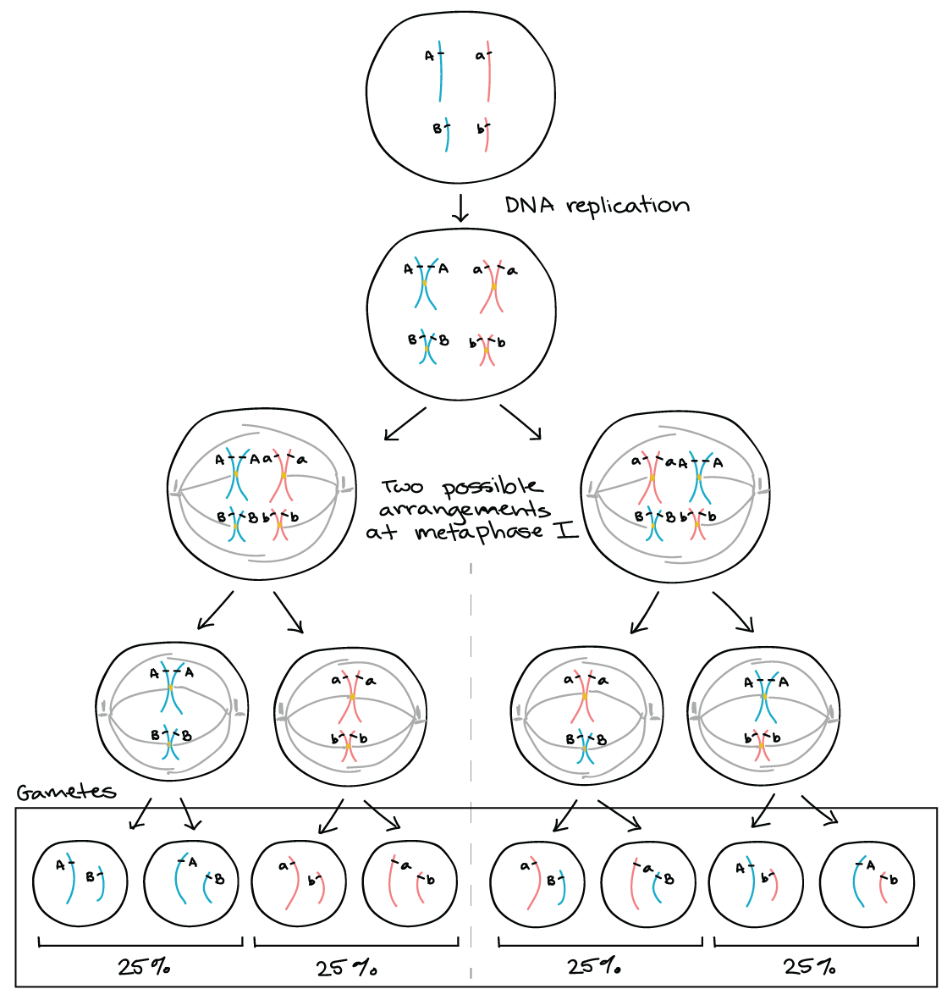</a>
<p class="caption"><span class="caption-number">Fig. 35 </span><span class="caption-text">The homologues of each pair separate in the first stage of meiosis. In this process, which side the male parent and female parent chromosomes of each pair go to is random. When we are following two genes, this results in four types of gametes that are produced with equal frequency. Image from <a class="reference external" href="https://www.khanacademy.org/science/ap-biology/heredity/non-mendelian-genetics/a/linkage-mapping">Khan Academy</a></span><a class="headerlink" href="#making-gametes-khanacademy" title="Permalink to this image">¶</a></p>
</div>
<p>At the very beginning of meiosis, homologous chromosomes randomly exchange matching fragments of DNA.</p>
<div class="figure align-default" id="recombination-khanacademy">
<a class="reference internal image-reference" href="../_images/Recombination-KhanAcademy.png">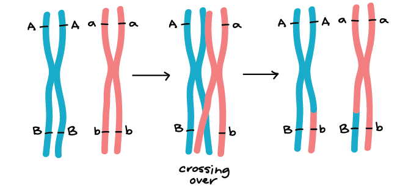</a>
<p class="caption"><span class="caption-number">Fig. 36 </span><span class="caption-text"><em>Recombination</em> image from <a class="reference external" href="https://www.khanacademy.org/science/ap-biology/heredity/non-mendelian-genetics/a/linkage-mapping">Khan Academy</a></span><a class="headerlink" href="#recombination-khanacademy" title="Permalink to this image">¶</a></p>
</div>
<p>Recombination and homologous pair arrangement each contribute the the genetic variation of offspring from a parental generation. An animal’s behavior is comprised of many phenotypes. For example, one person might: participate in a lot of sports, spend a lot of their time socializing with other people, and read a lot; while another person might: not do any sports, spend most of their time alone, and write a lot. Let’s consider that these two people mated. If all of their offspring were either “just like one parent” or “just like the other parent”, then it might infer that the genes underlying all three of these behaviors are <em>linked</em>.</p>
<dl class="glossary simple">
<dt id="term-genetic-linkage">genetic linkage<a class="headerlink" href="#term-genetic-linkage" title="Permalink to this term">¶</a></dt><dd><p>the tendency of DNA sequences that are close together on a chromosome to be inherited together during the meiosis phase of sexual reproduction.</p>
</dd>
</dl>
<div class="section" id="gene-phenotype-trends">
<h3>Gene-Phenotype Trends<a class="headerlink" href="#gene-phenotype-trends" title="Permalink to this headline">¶</a></h3>
<p>The biochemistry of genetic heritability through sexual reproduction leads to several consistent associations between the number and linkage of genes and phenotypic distribution and correlation.</p>
<div class="figure align-default" id="id1">
<a class="reference internal image-reference" href="../_images/gene-phenotype-trends.png">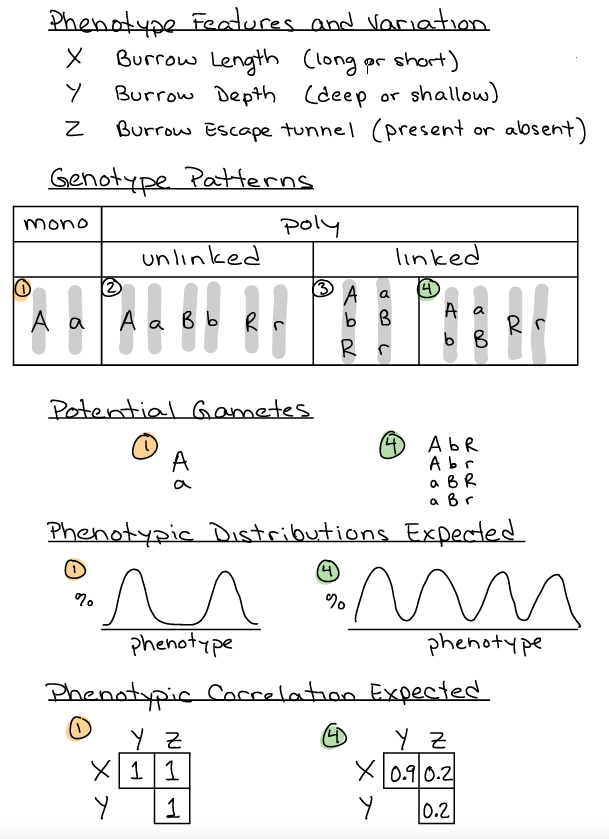</a>
<p class="caption"><span class="caption-number">Fig. 37 </span><span class="caption-text">Many animals burrow, but different species exhibit different types of burrowing behavior. Consider three main features to burrowing behavior that can be measured: tunnel length (X), tunnel depth (Y), and the presence of an escape tunnel (Z). Maybe one species digs short, shallow tunnels with no excape while another species digs long, deep tunnels with an excape. There are many different <em>genetic architectures</em> that could explain these species differences. Four examples are given: one <em>monogenetic</em> architecture and three <em>polygenic</em> architectures. Each of these different genetic architectures would yield different results if the two species were interbred. The results of genetic crosses can therefore be used to infer basic features of the genetic architecture for behavior.</span><a class="headerlink" href="#id1" title="Permalink to this image">¶</a></p>
</div>
<p><em><strong>Q: List the possible gamete allele combinations for #2 and #3</strong></em></p>
<p><em><strong>Q: What experiment could you design to determine if the genes underlying behaviors of different species were genetically linked or not?</strong></em></p>
</div>
</div>
<div class="section" id="experimental-approaches">
<h2>Experimental Approaches<a class="headerlink" href="#experimental-approaches" title="Permalink to this headline">¶</a></h2>
<div class="section" id="genes">
<h3>Genes?<a class="headerlink" href="#genes" title="Permalink to this headline">¶</a></h3>
<div class="section" id="cross-fostering">
<span id="index-0"></span><h4>Cross Fostering<a class="headerlink" href="#cross-fostering" title="Permalink to this headline">¶</a></h4>
<p>You have already examined <a class="reference internal" href="phylogeny.html#phylogeny-burrowing-assignment"><span class="std std-ref">the phylogeny of burrowing behavior among <em>Peromyscus</em></span></a>. Are burrowing behavior phenotypes <em><strong>inherited genetically or learned culturally</strong></em>? Research using <em>P. maniculatus</em> and <em>P. polionotus</em> provide a great example of how to investigate this question.</p>
<div class="figure align-default" id="burrow-hoekstra-fig1">
<a class="reference internal image-reference" href="../_images/burrow-Hoekstra-Fig1.png">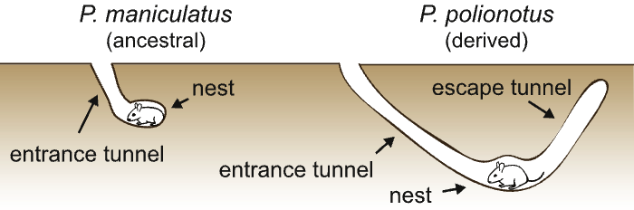</a>
<p class="caption"><span class="caption-number">Fig. 38 </span><span class="caption-text">The ancestral burrow architecture, built by P. maniculatus, is short (&lt;15 cm)
and simple. In contrast, adult P. polionotus dig stereotyped burrows with a
long entrance tunnel, nest chamber, and escape tunnel (total excavation
length 50 cm).<a class="footnote-reference brackets" href="#hoekstra-2017" id="id2">1</a></span><a class="headerlink" href="#burrow-hoekstra-fig1" title="Permalink to this image">¶</a></p>
</div>
<p>Rearing offspring from animals exhibiting one phenotype with parents exhibiting another phenotype. The phenotype of cross-fostered offspring are usually compared with the phenotype of offspring raised by biological parents. Offspring raised by non-biological parents with the biological parent phenotype would be a better control.</p>
<div class="figure align-default" id="cross-foster-burrow-hoekstra-fig2">
<a class="reference internal image-reference" href="../_images/cross-foster-burrow_Hoekstra-Fig2.png">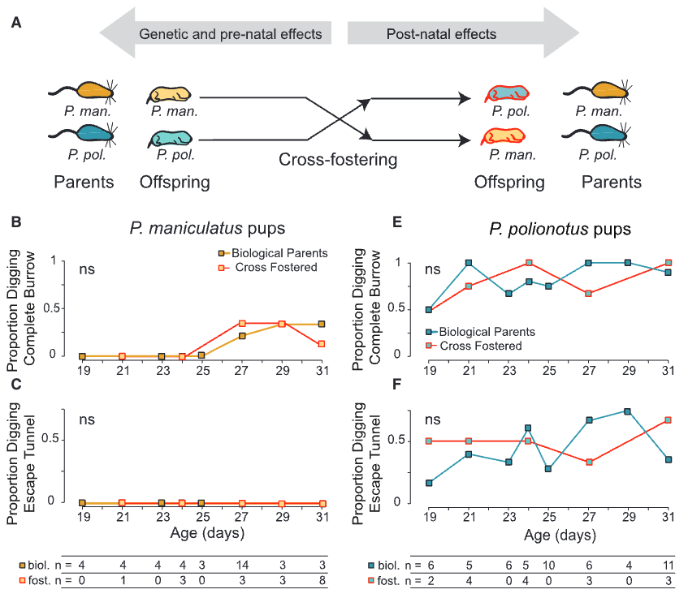</a>
<p class="caption"><span class="caption-number">Fig. 39 </span><span class="caption-text">(A) Schematic of cross-fostering design with P. maniculatus (yellow) and P. polionotus (blue), with cross-fostered pups highlighted in red.
(B and E) Proportion of mice constructing complete burrows. (C and F) Proportion of mice building an escape tunnel.
Sample sizes for each age and foster group are shown. Significance levels are indicated as follows: ns (not significant), p &lt; 0.05.<a class="footnote-reference brackets" href="#hoekstra-2017" id="id3">1</a></span><a class="headerlink" href="#cross-foster-burrow-hoekstra-fig2" title="Permalink to this image">¶</a></p>
</div>
<p><em><strong>Q: The results support the hypothesis that burrowing behavior is ( genetically inherited / culturally learned ). (Select one answer choice)</strong></em></p>
<p><em><strong>Q: Plot the results that you would predict under the hypothesis that burrowing behavior is ( genetically inherited / culturally learned ). (Select and plot whichever you did not select for the last question)</strong></em></p>
</div>
</div>
<div class="section" id="what-genes">
<h3>What Genes?<a class="headerlink" href="#what-genes" title="Permalink to this headline">¶</a></h3>
<div class="section" id="genetic-cross">
<span id="index-1"></span><h4>Genetic Cross<a class="headerlink" href="#genetic-cross" title="Permalink to this headline">¶</a></h4>
<p>Several features of Peromyscus burrowing behavior make it a well-suited system for tackling how genetic change leads to complex behavioral change.</p>
<ul class="simple">
<li><p>Burrowing behavior is largely innate.</p></li>
<li><p>A burrow is a behavioral product (“extended phenotype”) that can be measured like a morphological trait.</p></li>
<li><p>Burrowing behavior has diverged significantly between two interfertile sister species, P. maniculatus and P. polionotus.</p></li>
</ul>
<p>Because they are interfertile, they can be genetically <em>crossed</em>. Genetic crosses afford powerful insight into the genetic basis of phenotypic variation. Phenotype <em>heritability patterns</em> are a useful tool for inferring the number of and relationship among genes contributing to complex behavioral phenotyps.</p>
<div class="figure align-default" id="burrowing-cross-design">
<a class="reference internal image-reference" href="../_images/burrowing-cross-design.png">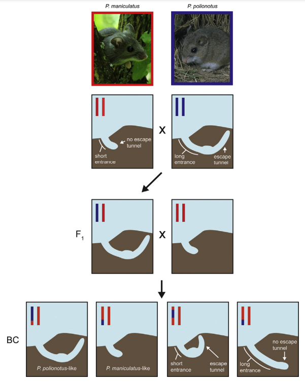</a>
<p class="caption"><span class="caption-number">Fig. 40 </span><span class="caption-text">Cross design for identifying genetic architecture of burrowing differences
between P. maniculatus (red) and P. polionotus (blue). The two species are crossed to
generate F1 hybrids, which have a chromosome from each of the parents (red and
blue). F1 hybrids, which produce P. polionotus-like burrows, are then backcrossed
to P. maniculatus. The resultant backcross generation (BC) shows a range of burrow
architectures: burrows that resemble the parents (short entrance tunnel, without
an escape tunnel and long entrance tunnel, with an escape tunnel) as well as new
architectures (short entrance tunnel, with an escape tunnel and long entrance tunnel, without an escape).<a class="footnote-reference brackets" href="#hu-hoekstra-2017" id="id4">2</a></span><a class="headerlink" href="#burrowing-cross-design" title="Permalink to this image">¶</a></p>
</div>
<p>Example: data distributions from bendesky 2017
Infer polygeneic
… why?</p>
<p>Example: correlation of behavioral phenotype features from burrowing
Tunnel lengths and the presence of escape tunnels (that is, tunnel number) are only weakly correlated in BC mice<a class="footnote-reference brackets" href="#weber-2013" id="id5">3</a>. Therefore, the complex burrows of P. polionotus comprise at least two separate behavioural modules, one for tunnel length and one for the presence of an escape tunnel.
How infer these genes are <em>independent</em>?</p>
</div>
<div class="section" id="forward-genetics">
<span id="index-2"></span><h4>Forward Genetics<a class="headerlink" href="#forward-genetics" title="Permalink to this headline">¶</a></h4>
<p>The identification of genomic regions associated with behavioral phenotypes is a first step in the identification of causal genes responsible for variation in a naturally evolved, complex behavior.</p>
<p>Gregor Mendel was either clever or lucky enough to study traits of simple inheritance in his pea plants; however, many plant characters of interest to modern geneticists are complex (<em>quantitative</em>). Understanding the genetic basis of quantitative traits requires a combination of modern molecular genetic techniques and powerful statistical methods.</p>
<p><strong>Quantitative Trait Locus (QTL) mapping</strong> is a widely used statistical tool for this purpose. QTL mapping simply involves finding an association between a genetic marker and a phenotype that can be measured.</p>
<div class="figure align-default" id="qtl-mapping-plants">
<a class="reference internal image-reference" href="../_images/QTL-mapping-plants.png">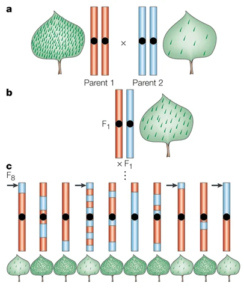</a>
<p class="caption"><span class="caption-number">Fig. 41 </span><span class="caption-text">In QTL mapping, the parental alleles are shuffled by <em>crossing</em> parents and progeny in various orders to create a large mapping population.<a class="footnote-reference brackets" href="#mauricio-2001" id="id6">4</a></span><a class="headerlink" href="#qtl-mapping-plants" title="Permalink to this image">¶</a></p>
</div>
<div class="figure align-default" id="qtl-mapping-plants-regression">
<a class="reference internal image-reference" href="../_images/QTL-mapping-plants-regression.png">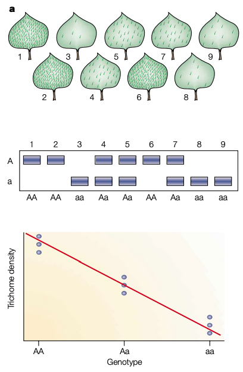</a>
<p class="caption"><span class="caption-number">Fig. 42 </span><span class="caption-text">The phenotype and the multilocus genotype of each individual in the mapping population are measured. <em>Markers</em> along the genome that are specific to each parental genotype are targetted for analysis. There are several different statistical techniques available for QTL mapping. Essentially, it is a regression or correlation.<a class="footnote-reference brackets" href="#mauricio-2001" id="id7">4</a></span><a class="headerlink" href="#qtl-mapping-plants-regression" title="Permalink to this image">¶</a></p>
</div>
<p>To localize the causal regions for burrowing behavior in the genome, hybrid animals from a large cross pf P. maniculatus and P. polionotus were assayed for burrowing behavior and then genotyped. QTL mapping techniques were used to identify regions that explain phenotypic variation in burrowing.</p>
<div class="figure align-default" id="qtl-burrowing">
<a class="reference internal image-reference" href="../_images/QTL-burrowing.png">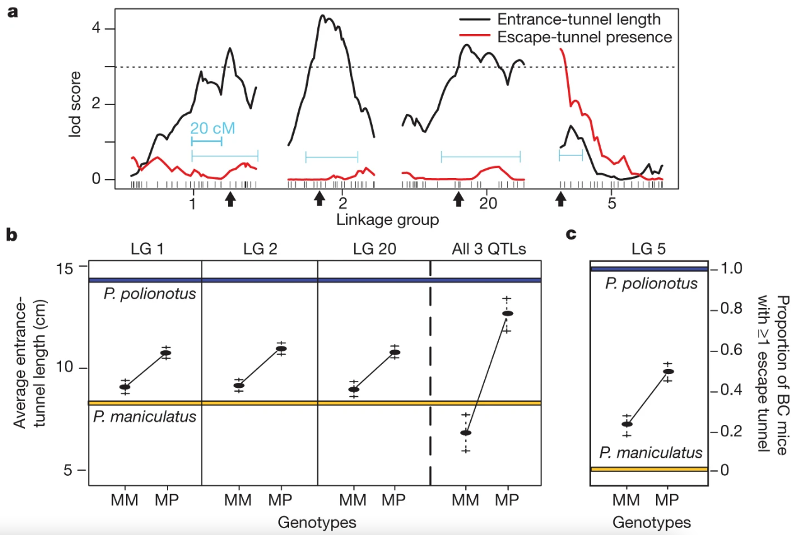</a>
<p class="caption"><span class="caption-number">Fig. 43 </span><span class="caption-text">QTL analysis of burrowing variation.<a class="footnote-reference brackets" href="#weber-2013" id="id8">3</a> a, Linkage groups (LGs) 1, 2 and 20 harbour QTLs associated with log-transformed average entrance-tunnel length (black line). Linkage group 5 contains a single QTL associated with escape-tunnel presence (red line). Dotted line represents log odds ratio (lod) significance threshold (genome-wide α = 0.05, lod = ∼3.0). 1.5-lod confidence intervals and scale in centimorgans (cM) are shown in light blue. Dashes indicated genetic markers, and black arrows indicate markers used to define each QTL peak (used in b). b, Phenotypic effect of individual and combined QTLs (linkage groups 1, 2 and 20) on entrance-tunnel length in 272 BC mice. c, Proportion of BC animals that construct escape tunnels for each of the two genotypes. All error bars represent mean ± s.e.m. Blue and yellow lines represent average phenotype of the parents (pure species) used to found the cross. Genotypes are either homozygous P. maniculatus (MM) or heterozygous P. maniculatus/polionotus (MP).</span><a class="headerlink" href="#qtl-burrowing" title="Permalink to this image">¶</a></p>
</div>
<p>After narrowing down a chromosomal region that explains some fraction of pheontypic variation, <strong>genetic Sequencing</strong> is then a necessary (and difficult) step to understand how specific sequence changes cause behavioral changes.</p>
</div>
<div class="section" id="reverse-genetics">
<span id="index-3"></span><h4>Reverse Genetics<a class="headerlink" href="#reverse-genetics" title="Permalink to this headline">¶</a></h4>
<p>It was previously generally thought that animal behaviors are too complex to be immediately determined by genetic factors. For example, male courtship behavior in Drosophila is a stereotyped sequence of FAPs in which a male follows a female, taps the female, sings a song by vibrating one wing, licks the female’s genitalia and curls the abdomen to attempt copulation. Male courtship behavior is obviously complex, however, it was one of the first behaviors found to be specified by a single gene.</p>
<p>Using a <em>reverse genetic</em> approach, Demir and Diskson (2005)<a class="footnote-reference brackets" href="#fruitless-dickson" id="id9">5</a> showed that the fruitless gene is transcribed and translated differently in male and female flies. By splicing the fruitless gene in a “male” way, they were able to induce male courtship behavior in female flies. Male homozygous fruitless mutants have normal genitalia but do not exhibit courtship behavior toward female flies.</p>
<p>Even though many behaviors are <em>polygenic</em> (effected by multiple genes), a reverse genetic approach can still yield insight.</p>
</div>
</div>
</div>
<div class="section" id="case-study-genetics-of-monogamy">
<h2>Case Study: Genetics of Monogamy<a class="headerlink" href="#case-study-genetics-of-monogamy" title="Permalink to this headline">¶</a></h2>
<p>Because the genome of an animal dictates its bodily material (including their nervous system), it can determine an animal’s behavior. Many people specialize in researching the genetic differences among species and individuals that explain behavioral differences. For example, Thomas Insel studies the genetic basis of mating behavior.</p>
<p>Monogamy and promiscuity are two common <em>phenotypes</em> for mating behavior.</p>
<dl class="glossary simple">
<dt id="term-monogamy">monogamy<a class="headerlink" href="#term-monogamy" title="Permalink to this term">¶</a></dt><dd><p>one reproductive partner</p>
</dd>
<dt id="term-promiscuity">promiscuity<a class="headerlink" href="#term-promiscuity" title="Permalink to this term">¶</a></dt><dd><p>several reproductive partners at a time</p>
</dd>
</dl>
<p>Thomas Insel, head of the National Institute of Mental Health and a pioneer in vole studies, describes voles as “an extraordinary gift to science” in which nature has performed an experiment with which we can ask the question: “what was modified genetically in the brain to get this difference in behavior?” In this case, mating behavior.
Unlike most rodents, many voles are monogamous, forming bonds that last long after mating (often for life) and cohabitating more or less permanently in subterranean dens. Prarie voles are one of these robustly monogamous species. Interestingly, prairie voles have near-identical cousins called montane voles that do not form social bonds after mating.</p>
<p>The results of one of the first genetic experiments in montane and prarie voles are shown in Fig. ____.</p>
<div class="figure align-default" id="young-1999-genes">
<a class="reference internal image-reference" href="../_images/Young1999-AVPgene-comparison.png">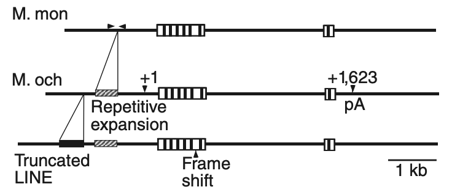</a>
<p class="caption"><span class="caption-number">Fig. 44 </span><span class="caption-text">“Structure of the Vasopressin-receptor (V1a-R) gene in voles. V1a-R genes from
montane vole (M. mon) and prairie vole (M. och) were isolated from genomic DNA
libraries. Transcription begins at +1 and polyadenylation (pA) occurs at +1,623 of
the prairie vole gene. The boxed area within these sites represents the coding
region and the vertical bars in the coding region represent the location of the receptor’s
transmembrane domains. The sequences of the genomic clones have been deposited in GenBank
(accession number AF069304).”<a class="footnote-reference brackets" href="#young1999" id="id10">6</a></span><a class="headerlink" href="#young-1999-genes" title="Permalink to this image">¶</a></p>
</div>
<p>Young et al 1999 <a class="footnote-reference brackets" href="#young1999" id="id11">6</a> did not find differences in the protein sequence of the V1a receptor gene. Instead, they found differences in the “microsatellite repeats” in the region of the genome read before the gene itself gets read. Although the V1a-R protein iteself is nearly identical between these two species, the protein ends up located in different parts of the brain. Microsatellite repeats do not effect the structure of a protein, but rather regulate where and when it is expressed (transcribed and translated).</p>
</div>
<hr class="docutils" />
<div class="section" id="additional-resources">
<h2>Additional Resources<a class="headerlink" href="#additional-resources" title="Permalink to this headline">¶</a></h2>
<ul class="simple">
<li><p><a class="reference external" href="https://learn.genetics.utah.edu/content/basics/">Basic Genetics</a></p></li>
<li><p><a class="reference external" href="https://www.khanacademy.org/science/ap-biology/heredity/non-mendelian-genetics/a/linkage-mapping">Genetic Linkage</a></p></li>
<li><p><a class="reference external" href="https://youtu.be/wvTv8TqWC48">Proteins</a> from PDB-101</p></li>
<li><p><a class="reference external" href="https://cdn.rcsb.org/pdb101/molecular-machinery/">Take an interactive tour of molecular machinery on the protein databank</a></p></li>
<li><p><a class="reference external" href="https://learn.genetics.utah.edu/content/epigenetics/control">Gene Control</a></p></li>
<li><p><a class="reference external" href="https://www.genome.gov/about-genomics/fact-sheets/A-Brief-Guide-to-Genomics">NIH Brief Guide to Genomics</a></p></li>
<li><p><a class="reference external" href="https://youtu.be/Pv4Ca-f4W9Q">The evolutionary and genetic history of the pelvic spine</a></p></li>
<li><p><a class="reference external" href="https://doi.org/10.1016/j.celrep.2022.110360">Hu, C. K., York, R. A., Metz, H. C., Bedford, N. L., Fraser, H. B., &amp; Hoekstra, H. E. (2022). cis-Regulatory changes in locomotor genes are associated with the evolution of burrowing behavior. Cell reports, 38(7), 110360.</a></p></li>
<li><p>Robert Plomin, Michael J. Owen and Peter McGuffin (1994) <a class="reference external" href="https://www.jstor.org/stable/2883921">The Genetic Basis of Complex Human Behaviors</a> Science, Vol. 264, No. 5166</p></li>
</ul>
<hr class="footnotes docutils" />
<dl class="footnote brackets">
<dt class="label" id="hoekstra-2017"><span class="brackets">1</span><span class="fn-backref">(<a href="#id2">1</a>,<a href="#id3">2</a>)</span></dt>
<dd><p><a class="reference external" href="https://doi.org/10.1016/j.cub.2017.10.061">Metz, Bedford, Pan, and Hoekstra. (2017) Evolution and Genetics of Precocious Burrowing Behavior in Peromyscus Mice. Current Biology 27(24).</a></p>
</dd>
<dt class="label" id="hu-hoekstra-2017"><span class="brackets"><a class="fn-backref" href="#id4">2</a></span></dt>
<dd><p>Hu, C. K., &amp; Hoekstra, H. E. (2017). Peromyscus burrowing: A model system for behavioral evolution. Seminars in cell &amp; developmental biology, 61, 107–114. <a class="reference external" href="https://doi.org/10.1016/j.semcdb.2016.08.001">https://doi.org/10.1016/j.semcdb.2016.08.001</a></p>
</dd>
<dt class="label" id="weber-2013"><span class="brackets">3</span><span class="fn-backref">(<a href="#id5">1</a>,<a href="#id8">2</a>)</span></dt>
<dd><p>Figure from <a class="reference external" href="https://doi.org/10.1038/nature11816">Weber, J., Peterson, B. &amp; Hoekstra, H. Discrete genetic modules are responsible for complex burrow evolution in Peromyscus mice. Nature 493, 402–405 (2013).</a></p>
</dd>
<dt class="label" id="mauricio-2001"><span class="brackets">4</span><span class="fn-backref">(<a href="#id6">1</a>,<a href="#id7">2</a>)</span></dt>
<dd><p>Figure from <a class="reference external" href="https://doi.org/10.1038/35072085">Mauricio, R. Mapping quantitative trait loci in plants: uses and caveats for evolutionary biology. Nat Rev Genet 2, 370–381 (2001).</a></p>
</dd>
<dt class="label" id="fruitless-dickson"><span class="brackets"><a class="fn-backref" href="#id9">5</a></span></dt>
<dd><p><a class="reference external" href="https://doi.org/10.1016/j.cell.2005.04.027">Ebru Demir and Barry J. Dickson (2005) fruitless Splicing Specifies Male Courtship Behavior in Drosophila. Cell 121(5)</a></p>
</dd>
<dt class="label" id="young1999"><span class="brackets">6</span><span class="fn-backref">(<a href="#id10">1</a>,<a href="#id11">2</a>)</span></dt>
<dd><p>Young, L., Nilsen, R., Waymire, K. et al. <a class="reference external" href="https://doi.org/10.1038/23475">Increased affiliative response to vasopressin in mice expressing the V1a receptor from a monogamous vole</a>. Nature 400, 766–768 (1999).</p>
</dd>
</dl>
</div>
</div>

    <script type="text/x-thebe-config">
    {
        requestKernel: true,
        binderOptions: {
            repo: "binder-examples/jupyter-stacks-datascience",
            ref: "master",
        },
        codeMirrorConfig: {
            theme: "abcdef",
            mode: "python"
        },
        kernelOptions: {
            kernelName: "python3",
            path: "./levels-of-analysis"
        },
        predefinedOutput: true
    }
    </script>
    <script>kernelName = 'python3'</script>

              </div>
              
            
                <!-- Previous / next buttons -->
<div class='prev-next-area'> 
    <a class='left-prev' id="prev-link" href="endogenous-rhythms.html" title="previous page">
        <i class="fas fa-angle-left"></i>
        <div class="prev-next-info">
            <p class="prev-next-subtitle">previous</p>
            <p class="prev-next-title">Endogenous Rhythms</p>
        </div>
    </a>
    <a class='right-next' id="next-link" href="development.html" title="next page">
    <div class="prev-next-info">
        <p class="prev-next-subtitle">next</p>
        <p class="prev-next-title">Development</p>
    </div>
    <i class="fas fa-angle-right"></i>
    </a>
</div>
            
        </div>
    </div>
    <footer class="footer">
  <p>
    
      By Dr. Krista Perks<br/>
    
        &copy; Copyright 2022.<br/>
  </p>
</footer>
</main>


      </div>
    </div>
  
  <script src="../_static/js/index.be7d3bbb2ef33a8344ce.js"></script>

  </body>
</html>